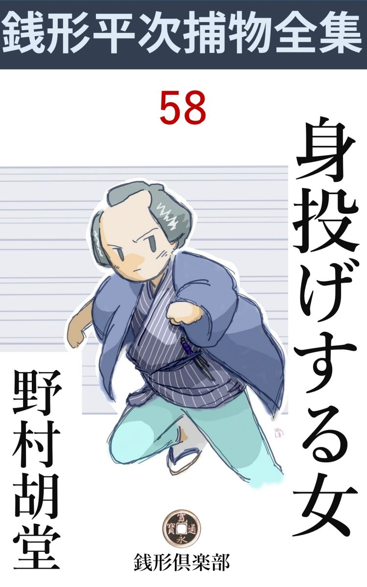
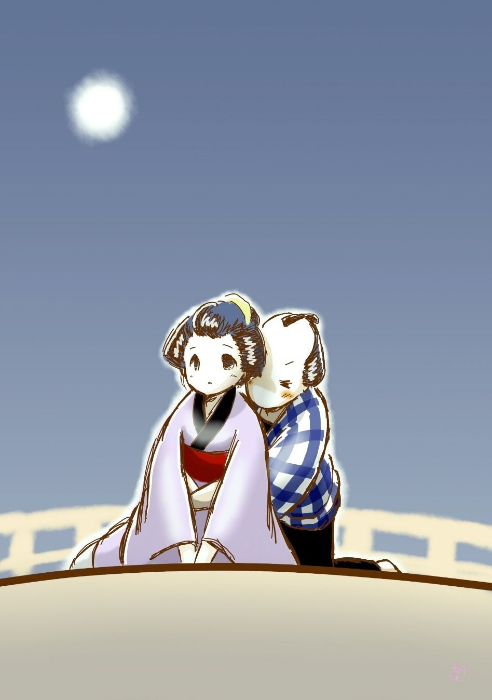

| 身投げする女: 銭形平次捕物全集第58話 (銭形倶楽部) | |
| 野村胡堂 | |
| ZENIGATA CLUB (2018) | |

一
ガラッ八の八五郎は、こんないい心持になったことはありません。
親分の銭形平次の名代 で、東両国の伊勢辰で鱈腹 飲んだ参会の帰り途、左手に折詰をブラ下げて、右手の爪 楊 枝 で高々と歯をせせりながら、鼻唄か何か唄いながら、両国橋へ差しかかって来たのは真夜中近い刻限でした。
借着ながら羽織を引っかけて、懐中 には羅紗 の大紙入、これには親分の平次が、人中で恥を掻いちゃ------と一分二朱を入れてくれたのですから、自分の身上 、六十八文と合せて、八五郎すっかりいい心持になったのも無理のないことです。
折柄の月夜、亥刻 を過ぎると、橋の上もさすがに人足が絶えます。
「おや？」
ガラッ八は立止りました。ツイ眼の前へ、人魂 のようにフラフラと行くのは、後姿ながら、若くて美しそうな娘、何やら思案に暮れる様子で、深々と顎 を埋め、襟の掛った秩父 絹 の袷 、潮垂れてはいるが、赤い可愛らしい帯、すらりと裾を引いて、草 履 の足音も、ホトホトと力がありません。
娘はガラッ八の跟 いて来るのに気が付かなかったものか、よろけるように欄 干 に凭 れると、初冬の月を斜 に受けて、鉛色に淀 んだ川の水を、ジイッと魅入られるように眺め入りました。
後 れ毛を掻き上げる繊 弱 い手、ホッと溜息を吐く様子までが、跫音を忍ばせたガラッ八には、手に取る如く見えるのです。
娘はしばらく涙に暮れる様子でした。フト、後ろからガラッ八の近づくのに気がつくと、草履を脱いで、その上に何やら紙片を置き、簪 を重 石 にして、
「南無------」
欄干へ攀 じ登ったのです。
「危ないッ、待った」
後ろから飛付いたガラッ八、危うく欄干を越しそうにした娘の身体をもぎ離すと、それを抱き上げたまま、力余って後ろざまによろけます。
「あれーッ、放して下さい」
必死ともがく娘。
「とんでもねえ、放したら又飛込むだろう。どんなわけがあるか知らねえが、死ぬのは不了簡------」
「いえいえ死ななきゃならないわけがある、お願いだから放して下さい」
華奢 で骨細な娘ですが、必死の力を出すと、腕自慢のガラッ八にも容易には押え切れません。後ろから羽 掻 締 に、欄干へ寄せないのが精一杯。
「死んで花実が咲くものか、------第一この寒空、死にようもあるのに、身投げに季節 じゃねえ、------落着いてわけを話せ」
「お願いだから殺して下さい、どうせ生きていられない私」
身を揉むほどに、娘の身体がしっとり汗ばんで、燻蒸 された脂 粉 の匂いが、揉み合うガラッ八をふんわりと押し包みます。
「どんなわけがあるにしても、こうなっては見殺しには出来ない、------俺も男の端くれだ、及ばずながら相談にも乗ってやろう、先ず訳を話せ」
「------」
「親も兄弟もあるのだろう、後に残る者の歎きも考えて見るがいい」
「------」
娘はしだいに気が落着いたものか、争うのを思い止まると、ガラッ八の胸に顔を埋めて、シクシクと泣き始めました。思い詰めた興奮が去ると、急に悲しみが蘇 生 ったのでしょう。
「いったい、何が何で死ぬ気になったんだ、話して見るがいい」
「------」
「色恋の沙汰 か」
「------」
娘は激しく頸 をふりました。
「それとも、よくある話だ、主人の金を落したとか、盗まれたとか------そうでもない？」
「------」
「じゃ、若い娘が死ぬほどのわけがないじゃないか、一体どうしたというのだ」
ガラッ八の手は何時の間にやら、娘の背を撫でて、その泣き濡 れた顔を覗いております。
「------叔母さんが、身売りをしろって言うんです」
「何？ 叔母さんが、身を売れって？------そんな馬鹿なことがあるもんか、親の承知しない者を、叔母が何と言ったって------」
「でも、私は親のない子で、叔父さん叔母さんに藁 のうちから育てられました。この暮のくり廻しが付かないから、吉原へ身を売れと言われると、いやとは申されません」
「------」
「どうぞ殺して下さい。生きていても望みのない身体、小さいとき死別れた、真実 の両親のところへ行くのが、せめてもの望みでございます」
顔を上げた娘、涙はもう乾いておりますが、月の光りに洗われたようで、その美しさというものはありません。精々十八、九にもなるでしょうか、言いようもなく哀れ深い姿です。
「とんでもねえ、身売りがいやだから死ぬというのは、若い者には無理のないことだが、どうせ金ですむことなら、何とか話し合いも付くだろう。ほんの少しばかりだが、これだけでも、持って行くがいい」
ガラッ八は懐中 から羅紗 の大紙入を出すと、その中から一分二朱と六十八文の全財産を懐紙に捻 って、娘の懐中に押し込みました。
「でも、私の身の代金は、年一杯で手取り三十五両と、女衒 が決めて行きました」
娘は少し困った顔を挙げます。
「なるほど、三十五両と一分二朱六十八文じゃ少し違い過ぎる、------こうしようじゃないか、俺がこれから叔父さん叔母さんに逢って、この暮 に入要の金が、掛値 のないところいくらか訊いて、それだけ工面してやろうじゃないか」
「いえ、そんなにまでなさらなくても------」
「そんなことで人一人------それもお前のような綺麗な娘の命を助けられるなら、俺も本望というものだ」
「暮に要る金はたった五両、わけがあって、私は知っております。手取り三十五両も入ったら、また博奕 の元手になることでしょう」
娘はやるせない姿でした。たった五両で死ぬ身が、我ながら疎 ましかったのでしょう。
「五両位なら何とかなるだろう、俺の叔母の家はツイそこだ、来て見るがいい」
「でも------」
渋 る娘の手を取るように、ガラッ八は叔母の家へ向いました。日頃ガラッ八の馬鹿馬鹿しさと純情さに打込んでいる独り者の叔母は、五両位のことは、何とかしてくれそうに思えたのです。
二
それから三日目。
ガラッ八の八五郎は、銭形平次の家へ久し振りでやって来ました。
が、格子 へ手を掛けて、
「ハッ」
と身を退いたのも無理はありません。中から後光 が射したように思ったのは、いつぞや両国橋で身投げを助けた娘が、平次と女房のお静に送られて、沓 脱 へ下り立ったところだったのです。
ガラッ八はあわてて飛退くと、庭木戸の蔭へ身を潜 めました。あの晩のロマンスは、さすがに打明けそびれて、平次にも言わずにおりますが、秘し隠しにしていたガラッ八の身分を捜り当てて、娘がわざわざ礼に来たのでしょう。
こいつはいけねえ------、ガラッ八はそう言いながら、額から月 代 を掌 で撫であげました。
そのうちに、もういちど丁寧に挨拶をして、娘は帰って行く様子。真昼の光の下で見ると、少しふけて、二十一、二と踏 めますが、身 装 は思いの外リュウとして、その明るく愛嬌作った美しさも尋常ではありません。
「八、何を驚くんだ」
銭形平次は早くも見つけました。
「へエ------」
「女の子が怖 いのか、戸袋の蔭なんかへ隠れて」
「怖いわけじゃありませんが、へッへッ」
「いやな笑いようだな、まア入れ」
平次は呑込み兼ねた様子で八五郎を誘 い入れました。美しい小春日が畳の上を這って、今まで敷いていたらしい、薄い座蒲団からユラユラと陽 炎 が立ち昇ります。
「あの娘 は何を言ったんで、------親分」
ガラッ八は頸 のところを掻きながら、膝小僧を揃えました。
「つまらねえ紛失物 さ、------ところで、お前の方にも心当りがありそうだ。いったいあの娘をどこで口 説 いたんだ」
平次は何やら嗅ぎ付けた様子で、ニヤリニヤリと陣を布きます。
「口説いたわけじゃありませんよ、親分」
「じゃ口説かれた口かい。たのもしいぜ、八」
「冗談で」
「早く白状しな、------俺は出て行かなきゃならない」
平次は少しも責め手を緩 めません。
「笑っちゃいけませんよ、親分」
「笑やしないよ、子供の時から、俺は睨めっこの名人さ、可笑しくたって笑わないから」
「弱ったなア、親分。からかっちゃ話が出来ねえ」
「贅沢な男だな、さア、言いねえ」
そんな事を言われながら、八五郎はとうとう三日前の晩の事を、一伍 一什 話させられてしまいました。
「叔母さんから五両借りて、暮の凌 ぎにさせるつもりで渡すと、娘はそれを握って、一目散に駆け出しましたよ。身売りをせずに済んで、どんなに喜んだか解りません」
ガラッ八はこう語りおわりました。
「そんな親切の籠った金を貰って、娘は手前 の名も訊かなかったのかい」
「へエ------」
「少し薄情だと思わなかったか」
「面喰 っていたんでしょうよ、親分」
「仏様だな、手前 は」
「でも、ここへ尋ね当てて来たじゃありませんか、------叔母の家からでも訊いたんでしょう」
八五郎は娘の行動を理由付けるのに一生懸命でした。
「それが大笑いさ、あの娘は両国橋で助けて貰ったのは、八五郎兄 哥 とは夢にも知らねえ。まるっきり違った用事で、この平次を訪ねて来たのさ」
「へエ------」
「驚くなよ、八」
「------」
八五郎はゴクリと固唾 を呑みました。平次のニヤニヤした顔が、何をとんでもない事を言い出すか解らなかったのです。
「あの娘 は、鳥越 の平助店 にいるお秋という者だ、------叔父、叔母といってるのは全く他人で、これは飴 屋 の丑松とお徳という、仕事の相棒さ。いずれよくない事で溜めたものらしいが、とにかく、三人で拵えた金が、驚いちゃいけないよ、八、二百九十五両」
「フーム」
「三日前に五両一分入って、ちょうど三百両一分になった。三百両になったら、百両ずつ三人で分けるという約束だったが、その時ちょうど肝 心 の飴屋の丑松が、木 更 津 へ行って留守、帰って来たところで、三人立会いの上、隠した場所から取出したのは昨夜 だ。封を切って見ると、中の三百両は綺麗になくなって、蛙 も何にもいないという話さ」
「------」
これを聞かされるガラッ八の鼻の窓の大きいこと。
「お秋は思案に余ってここへ飛んで来たのだよ、------どうせまともな商売で儲けた金ではないが、盗んだ金や掏 った金じゃない。三 年 越 身を削 る思いで溜めた三百両を、一人占めにされちゃ叶 わない。いずれ丑松かお徳の仕業に違いないから、何とかして取戻してくれ。とこういう頼みだ」
「------」
「俺はお上から十手捕縄を預る人間だ。世上の揉事 や、欲得ずくの話なら乗出さないが、三百両は何といっても大金だ。盗賊の訴えがあれば捨てておくわけに行かねえ」
「------」
「だがな、八。手前 が身投げを助けて、五両で命を買った女が、本当にあの娘なら、話はなかなか洒落 ているぜ。俺の代りに行って見る気はないか」
「へエ------」
ガラッ八はつままれたような心持でした。が、娘の正体を突き止めて、どんな顔をするか、見てやりたくないでもありません。
第一、紛失 した三百両を捜し出して、あの娘の前へ積んでやるのは、いつぞやの晩、五両一分二朱六十八文の金をやった時よりも、もっとよい心持になれそうな気がしたのです。
三
鳥越の平助店 は、袋路地の別世界を形成した、総 後 架 の前の四軒長屋でした。
路地の外に頑張 って、しばらく様子を見ていると、鉄 砲 笊 を担いだ屑 屋 が一人、何にも言わずにノソノソと入って行きます。多分、この路地に住む店 子 の一人でしょう。
「ちょいと、待ってくんな」
ガラッ八は呼止めました。
「へエ、へエ、何かお払いでも------」
四十年配の少し世の中を茶にしたような髯面が、それでも慇 懃 にガラッ八の前へ小腰を屈めました。
「払い物じゃねえ、ちょいと訊きたいことがある。そこの長屋の事だが------」
「へエ、私の家は左側の二軒目で」
「そんな事じゃない------とにかく、外へ出て一杯やりながら訊こうじゃないか」
「へエ------」
屑屋は自分の家へ笊 を抛 り込むと、黙って跟 いて来ました。こんな事には慣れている様子です。
町へ出ると、すぐ見つかった飲屋。縄暖簾 の中を覗いて、人のいないのを見定めてから入ると、樽 天 神 をきめ込んで、瞬 く間に二本三本と倒します。
「さア、親分、訊いて下さい。何でも言いますぜ、へッへッへッ」
屑屋は酔いが廻ったらしく、胸をはだけて、可笑しくないのに卑 屈 な笑いようをしております。
「実は、あの路地の中に住んでいるお秋という娘のことだが------」
八五郎は四方 を見廻しながら小声で切出しました。
「へッ、へッ、へッ、------知ってますよ、親分も引っ掛けられた口でしょう。------枝ぶりの良い柳原の松ですかい、それとも両国の橋の上で------」
「------？」
「土左衛門の真似はお秋がいかに女河童 でも時候じゃないから、やはりブラ下がりの口かな」
屑屋はすっかり呑込んで、身振り入りで浮かれております。
「何だい、それは」
「知ってますよ、親分、------親が病気で身を売らなきゃならない------とか、主人の金を五十両落っことした------とか、泣きながら、恐ろしく色っぽく持ちかけるでしょう。あれが術 なんで、へッへッへッ」
「------」
「こちとらがやったんじゃ、お笑い草だ。ブランコの足を引張られるか、川へ突き落されるのが関の山だが、------若くて綺麗な新造はトクだね、親分。十人が十人、有金引っ叩 かせられて、娘がいやがるのも構わず、ここまで送って来る、------それから翌る日知らん顔をしてここへやって来て、娘の身許を訊くとね、------筋 書 は大抵決ったものさ」
「------」
「ね、親分。悪いことは言わねえ、黙って帰んなさい、荒立てると恥 を大きくするばかりだ。あのお秋という娘は、虫も殺さねえ顔をしているが、海千山千の、下っ腹に毛のねえエテ物さ。丑松は飴屋崩れの凄い男で、お徳はその上を行く塩っ辛い大年増だ。四つに組んでもトクのいく代 物 じゃねえ。屑屋を渡世の俺でさえ、あの三人はよけて通ることにしているのさ」
「------」
ガラッ八の八五郎も、正に一言もありません。身投げ渡世の女を救って、五両一分二朱騙 られたとは、さすがに言うわけにも行かなかったのです。
「こいつは大笑いさ、------一杯飲まして頂くから言うんじゃねえが、あの路地を入 って、お秋の家を未練がましく覗 こうものなら、やった金へ利子が付く。へッへッ、あっしに逢ってからくりをみんな聞いたのが、親分の仕合せだぜ------」
屑屋の長広舌 は、どこまで続くか解りません。
「俺はそんなんじゃねえ、これを見るがいい」
ガラッ八はあまりの事に我慢がなり兼ねたものか、懐をくつろげて、チラリと十手の房を見せました。
「へエッ、親分さんは、お上の御用を承 る方で------そいつは知らなかった、とんだ事を申しました、勘弁なすっておくんなさいまし。ところで、いよいよあの三人にも年 貢 の納め時が来たのですかい、親分さん」
屑屋は急にペコペコし始めました。
「いや、大金が紛失 したと、娘が訴人して出たよ」
八五郎は、身投げの狂言に引っかけられた一人と思われたくないばかりに、ついこんな事まで言ってしまったのです。
「へエ、あの娘がですかい。へエ、三 年 越 の身投げ狂言だから、三百や五百は持っていたかも知れません。------そいつはいい気味ですね、------尤 も泥坊は判っているようなものだが------」
「判っている？」
「長屋はたった四軒、右側の二軒は空店 で、お秋の家は左側の奥、私のうちの隣りでさ。稼業 柄 思い切り汚な造りな暮し向だから、外から泥坊が入りっこはありません。金のあるのを知っているのは、相長屋のあっしと、あの三人だけでさ。泥坊はあっしでなきゃ、丑松かお徳で、こんな解り切ったことはないでしょう、親分さん、------憚 りながらあっしには覚えがねえ。すると、やはり丑松かお徳」
この際限もない屑屋 の話を、ガラッ八は神妙に聞いておりました。三百両の紛失は知らなかった様子ですから、泥坊は多分丑松かお徳でしょう。
その頃の三百両は、今の三百万円にも相当する大金で、紛失の訴えがあれば、御用聞が一応調べて見るのも、当然のことでもあったのです。
四
ガラッ八は屑屋に別れて、飴屋 の丑松の家へやって行きました。
「御免よ、------丑松はいるかい」
荒い格子を覗く迄もなく中は見通しの二た間、形ばかりの古い箪 笥 が一棹、葛籠 が一つ、割れた獅 噛 火 鉢 、芯 の出た座蒲団など------見る影もない惨 憺 たる住居です。
「誰だい、人を呼び捨てになんかしやがって、面 を見せろ」
隅っこでとぐろを巻いていたらしい中年男は、褞袍 へ袖を通して、起き上がりました。
「大層な勢いだな------少し調べることがあって来たよ、起きて貰おうか」
「へエ------」
目ざとく十手の突っ張った懐中 を見ると、丑松は弾き上げられたように飛起きました。上役人だけは、極度に恐れるように習慣付けられた人種だったのです。
「紛失物があったそうじゃないか、どこにその金が置いてあったんだ」
ガラッ八は精一杯の威儀 を作りました。
「へエ、恐れ入ります、------御苦労様で、へエ」
「そんな事はどうでもいい、俺の言う事に返事だけしてくれ」
「へエ、相済みません。------金は三百両、瓶 に入れて封 をして、お勝手の落しの中に置きました」
「奪られたのは」
「三日の間でございます。三日前にお秋が持って来た五両一分二朱と六十八文のうち、二朱と六十八文は当座の小 遣 いに取除け、五両一分を足して、丁度三百両と一分になったのを、封印をして落しに入れたまま、あっし は木更津へ参りました」
「何の用事で行ったんだ？」
「儲 け口で御座いますよ、親分さん、------が、当てごとは向うから外れて、ボンヤリ帰って来たのは。昨夜 。ここで三百両を三つに分けるつもりで瓶 の蓋を開けると、中は空っぽじゃありませんか」
「------」
「盗ったのはあっし とお徳とお秋のうち、それに違いありませんが、あっしは木更津へ行って昨夜帰ったばかり、お秋は自分で稼 いだも同様の金ですから、取る筈もなし」
「すると、お徳が怪しいと言うのか」
「そんなつもりで申したのじゃございません。近所だって、正直者ばかり住んでいるわけじゃありませんから、へエ------」
「そのお徳はお前の女房じゃないのか」
「世間じゃそう思い込んでおります。もっとも、お徳もそのつもりでいるようで、へッへッへッ、焼 餅 ばかり焼いて仕様がありません」
不思議な道徳を持った人達、ガラッ八は呑込み兼ねて顎 を長くしております。
「女二人はどこへ行ったんだ」
「お徳はお神籤 を引きに行きましたよ。お秋は大方番所へでもお願いに行ったんでしょう、親分さんが来て下すったところを見ると」
「お前は自棄 になって、朝から飲んで居たのかい」
「へエ------」
これはガラッ八の探偵眼にもよく解ります。茹 蛸 のように真っ赤になって、熟柿 臭 い息をフウフウ吐いている丑松だったのです。
「その落しと、瓶 を見せて貰おうか」
「へエ------」
案内されたのはお勝手、かなり重い土竈 をどけて、揚げ板を剥 ぐと、中は三尺四方位の穴になっております。隙 洩 る光線で一面の埃 は見えますが、瓶も何にもあるわけではありません。
「瓶は？」
「こっちに出してあります」
流しの前に据えたのは、一升入りほどの塩瓶 、蓋も封印もケシ飛んで、浅ましく空っぽの中を、天窓から落ちる微光にさらしております。
「お前さん、お神籤 は大凶 だよ、人の気も知らないで、本当に」
ブリブリしながら帰って来たのは、丑松の女房のつもりでいるらしいお徳です。三十前後、醤油で煮 〆めたような大年増ですが、どこか気の強そうなところがあって、丑松を取って押える貫禄は充分です。
「大凶は吉に変るというぜ」
「だって癪 じゃないか、四文払って、大凶の籤 なんか引かされて」
お徳はお勝手口からヌッと入ると、出合頭 、ガラッ八と鉢合せをするほど近々と対面してしまいました。
「お上の御用を務めていらっしゃる親分さんだよ」
と丑松。
「おや？」
お徳は面喰って、しばらくは挨拶も忘れた様子です。
「三日の間、この家を明けたことはないのかえ」
ガラッ八は平次譲 りの事務的な調子で、その驚いたところを突っ込みました。
「私は飴を売るのが商売だし、お秋さんは他に稼業 があるし、夜も昼も家を明け通しですよ」
「お前か、お秋が、一人で留守をしたこともあるだろう」
「今までだってありますよ」
「近所の者が忍び込んでも、知らずにいるわけだね。ここは一番の奥だから？」
「近所だって、お向うは二軒とも空いているし、物騒なのは隣りの屑屋より外にゃありゃしません。清吉といってね、人間は馬鹿げているが、兇状持 ですよ」
「何の兇状持だ」
「畑 荒 しの、------本人が自慢で言うんだから嘘じゃありません。沼津にいるとき、西瓜畑を荒して、それが表沙汰になって三十叩かれて追放された------って。尤 も丁寧に勘定したら、二十七しか叩かなかった、お上にもお情けはあるんですってね、親分さん」
どうもこの女から筋の立った話を訊き出すのは、容易の業 ではありません。
しばし待ちましたがお秋は帰らず、ガラッ八は物足りないような安心したような心持で引揚げました。引揚げる前に、箪笥や葛籠 や、押入や天井裏や、一応家の中を見たことは言うまでもありません。
五
「親分、大変ッ」
ガラッ八が飛込んで来たのは、翌る日の朝でした。
「何が大変なんだ、------虫持 じゃ付き合いきれないぜ、毎日一度ずつ、その『大変』の振出しを呑まされちゃ」
平次は房楊枝 を井戸端の柱に植えて、手水 鉢 に水をくみ入れながら、こう振返りました。
「あの女が殺されましたぜ、親分」
「どの女だ」
「飴屋のお徳が、今朝ドブ板の上へ四つん這いになっていたのを、屑 屋 の清吉が見つけたんで」
「そいつは大変だ」
平次は大急ぎで顔を洗うと、着換 えもそこそこ、鳥越の平助長屋へ飛びました。
「寄るな寄るな、下手 に顔を出すと、掛り合いだぞ」
町役人と番太が、警戒の声を涸 らしている中へ、平次と八五郎は息せききって駆けつけたのです。
「あッ、銭形の親分さん、丁度いいところへ、八五郎親分さんも御一緒で------」
平次はそれを掻き分けるように、長屋の裏へ廻りました。
「あッ」
物馴れた眼にも、その惨憺 たる有様はたじろぎます。お徳は後ろから頸筋を深々と切られて、半分開けたドブ板に手を掛けたまま、碧 血 の中に崩 折 れていたのです。
刃物はよく切れそうな菜 切 庖丁 が一挺、これでやりましたと言わぬばかりに、死体の側に。
「これはどこのだ」
平次は取上げました。
「へエ、------私の家ので、世帯を畳む人の払い物の中から、使えそうなのを残して置いたんで」
屑屋の清吉は神妙そうに顔を出しました。
「どこに置いてあった」
「お勝手でございますよ、親分さん。でも、戸 締 りなんかしたことがありませんから、案内知ったものなら、ちょっと戸をすかしただけで、わけもなく棚 から取れます」
清吉は一生懸命の弁解でした。
「この死体の恰好は面白いだろう。八。ドブ板を剥 がそうとして、手を掛けたところを、後ろからやられた形だ、------お徳が金をここへ隠して置いて、取出そうとしたところをやられたか、それとも------」
平次はその後は言いませんでした。
その声を聞いて、家の中から出て来たのは丑松とお秋です。
「銭形の親分さん、とんだことになりました。とうとうこんなことになって」
おろおろするお秋。
「気の毒だが、金は容易 に戻るまいよ、------下手人を捜すのはわけもないが」
「親分さん」
「もっとも、三百両と一分のうち、五両一分の施主 はここにいるが、本人は思いのほか諦めているぜ」
「まア------」
振り返ったお秋、ガラッ八と顔を合せて、さすがに仰天しました。たった四日前の一番甘かった施 主 、この長い顔の持主は忘れようとして忘られる筈もありません。
ガラッ八はしかし、この娘をとがめる気にはなりませんでした。身投げや頸 吊 りの狂言までして、三百両の大金を稼 ぎ溜めた女にしては、何という清純な美しさでしょう。
打ち続く激動と疲労に、少し蒼くはなっておりますが、歌舞伎役者のように整 った身体、古い袷 がピタリと身について、乱れた毛もたしなみを失うほどではなく、激情的に赤い唇も、深い悲しみを湛 えた黒い瞳も、ガラッ八の眼には、言いようもなく美しく悩ましく見えるお秋だったのです。
金はどこを探しても見つかりません。ドブ板の乱れ工合から見ると、多分三百両を隠したお徳が、人知れずそれを取出そうとして、それを覗 っていた曲者にやられたのでしょう。
丑松はその晩も留守、これは自棄 の小博奕 に夜明しをしたと解って------途中で抜出して、お徳を殺す時間があったかも知れないにしても、一応は疑いの外におかれ、隣家の屑屋清吉は、いちばん不利な立場に陥 って、とうとう平次に引立てられてしまいました。
「俺じゃねえ、俺はそんな人間じゃねえ。正直屑屋の清吉といや、浅草中で知らない者のない俺だ」
番所へ伴れて行かれても、清吉は必死と抗弁をつづけます。
「畑荒らしの兇状持 だと言うじゃないか」
「とんでもねえ、田舎の若い者が、西瓜 の一つや二つ盗ったところで、一々お上沙汰になってたまるものか、あれは見栄を張って、チョイと言って見ただけの話さ。丑松の野郎は喧嘩兇状と、博奕兇状と二つも持っていると言うから、負けているのが癪 にさわったんだ」
この調子ですから、平次も手のつけようがありません。
「親分、屑屋の火鉢の中から、小判で三両出て来ましたぜ」
ガラッ八が飛んで来ました。
「どれ、見せろ、------成程、吹き立ての小判が三枚だ、これはどこから出した」
「国を出る時から、万一の用意に持っているんだ。お袋の形見 だ」
と清吉。
「嘘をつけ、あとの二百九十七両はどこへやった」
「知らねえ知らねえ、そんな事を知るものか」
「いや、知らないとは言わさない、------昨夜だって、三間とは離れないお勝手から庖丁を持出されて、ドブ板の上で人殺しのあったのを知らなかった筈はない」
平次は容赦 もなくグングンと突込んで行きました。
「自慢じゃねえが、俺は一杯飲んで寝ると、死んだも同様だ------飲まない晩の事なら、そのかわり何でも知っている。飴屋の丑松の野郎が、木更津へ行ったと言い触らして、賭 場 で夜を更かして帰って、お秋を誘 い出したことまで------」
「待て待て、それは本当か清吉」
「本当も嘘もねえ。丑松を締め上げるなり、賭場を洗って見るなり、行ったという木更津を調べりゃ解ることだ。あの野郎は浅草切っての悪党だが、押かけ女房のお徳がその上を越す悪党で、丑松も女房の悪党ぶりが気味が悪くなったんだよ。それに、間がな隙 がな、綺麗なお秋を付け廻して、口 説 き落そうとしていたんだ。第一お秋の稼 ぎというものは容易じゃねえ。柳原土手と両国の橋の上で、この二三年の間に三百両------いや四百両も稼いでいる」
清吉の言葉には真実性があります。
「八、行って見ようか」
「二人突き合せて叩かせると、お互いに埃 の出ようが違やしませんか」
「その事だ」
平次はガラッ八に清吉を預けて、鳥越の長屋へ飛んで帰りました。お徳の死体は一応家の中へ入れて、丑松はその前で茶碗酒を呷 っています。
六
清吉の家の中から、三両、五両と順々に小判小粒が発見されました。壁の破れ目、畳の中、土 竈 の下と、凡 そ人の気のつかないところから、二日間に捜し出したのは、〆めて十八両、あとの二百八十二両はどこへ隠したか解らず、清吉もまた、頑 としてお徳殺しを白状しません。
「金はあの朝、死骸を見つけた時、側に落ち散っていたんだ。------出来心で隠したが、お徳を殺したのは、俺じゃねえ」
と言い張るのです。
丑松は素直に、お秋を付け廻したことも、木更津へ行ったことにして、お徳の鋭 鋒 を避 け、実はお秋を誘い出しにかかったことも白状しましたが、お徳を殺したことはどうしても言わず、それに証拠が一つもありません。
丑松をいちおう帰して、お徳の葬 いをすませ、改めて呼出そうとすると、今度は、お秋が行方不明になった事がわかりました。
「しまったッ。お葬いが済んだらすぐあの娘を呼出そうと思っていたのに、------あの娘は下手人か、でなければ何もかも知っていたに違いない」
平次は口惜 しがりますが、広い江戸、姿を変えてどこかへ潜 り込めば、容易のことでは見つかりません。
「あの娘が三百両を盗んで、お徳を殺したのでしょうか、親分」
ガラッ八は少し平 かでない様子でした。
「身投げの狂言で、三百両も稼 いだ娘だ。顔は綺麗でも、あまり信用は出来ないよ」
「そんな事はありませんよ、身投げの狂言は、芝居気さえあれば出来ます。泥坊や人殺しは、あの娘に出来る芸当じゃない」
ガラッ八は妙 にやっき になります。
「まアいい、俺には俺の考えがある、------世間の評判でもわかる通り、悪かったのはあのお徳さ。いやがるお秋に、あんな仕事をさしていたんだと言うから」
「ね、その通りでしょう、親分」
「だが、あの日の朝、お秋の着物にドブ泥の着いていたことに気がつかなかったかい」
平次はそんな事まで見ていたのです。
「お徳の死骸を見て、びっくりして抱き上げたんですもの、溝 泥 も血も着きますよ」
「もういい、------今日は少し変だぜ、八」
平次は苦笑いして、鉾 を納めました。
「でも、これだけは聞いて下さい、親分。お秋は丑松を嫌ってはいるが、捨児 を拾って育てられた恩があるから、蔭じゃ丑松を庇 っていますぜ。お徳はこの三年ばかり前に顔を出した女で、お秋に身投げの狂言 を仕込み、丑松を抱きこんで嫌がるのを無理にやらせた女だ。お秋とは人柄が違いますよ」
ガラッ八は日頃に似気なく調べが届きます。
「よく聞き込んだね、八」
「それほどでもありませんよ」
「とにかく、お徳の殺されたのは暁方 だ。その時刻に、丑松がどこにいたか、もういちど突っ込んで見るとしよう。それからお秋の行方は江戸中に網を張って捜 さなきゃなるまい。あの娘が下手人でも、下手人でなくとも------」
「------」
あとの一句が、八五郎には気に入らない様子でした。
「それから、二百八十二両はどこへ誰が隠したか、------金を持っている奴が、十中八九下手人に決っている」
平次はしばらく息を抜いて、誰が金を使い出すか、それを見てやろうとしている様子でした。
七
その頃から、浅草、下谷、日本橋、本所へかけて、不思議な届 出 が続出しました。金額は定まりませんが、多いのは二十両三十両、少ないのは一分二分、現金を紙に包んで、窓からお勝手口から、雨戸の隙 間 から、そっと投り込んで行くものがあったのです。
金額を調べてみると、遠くて一二年前、近くはツイ一二カ月前、柳原の土手か、両国橋で、自殺しようとしている娘を救い、その気の毒な事情に同情して、乞 わるるままにくれてやった金と、細かい端 数 までピタリと合っているではありませんか。
「八、お秋は金を返し始めたよ、------四五日前からやっているようだが、掛り合いが面倒だから、最初のうちは誰も届出 なかったんだ、------今になって見ると、金を盗ったのは、やはりあの娘だったんだね」
「盗ったり返したり、おかしいじゃありませんか」
腑 に落ちないのは八五郎ばかりじゃありません。
「とにかく、柳原の叔母さんの家へ行って五両の金が返ったかどうか訊いてくれ、多分いの一番に返したと思うが」
「------」
「それから、これは大事なことだが、金を返した日と時刻 とを訊いて来るんだよ」
「へエ」
八五郎は飛んで出ました。
それから半刻 ばかり。
「親分、変なことになりましたぜ」
旋風 のように飛んで帰ったのです。
「何が変なんだ、八」
と平次。
「金は確 かに叔母のところに返してありましたよ。懐紙に包んで、小判で五両、------ところが、窓から金を投り込まれたのは、お徳の殺された晩で、しかも叔母がたった一人で晩飯の後片付けをしている時だというから、戌刻 より遅くはありません」
「何だと？ 八」
「金はお徳が殺される前------その晩の宵 のうちに叔母のところへ返されたんですぜ。親分、これは一体、どう言うわけでしょう」
ガラッ八の疑 いは平次の疑いでした。
「待ってくれ、------最初金が無くなって、俺のところへ来たのはお秋だ、------その後でドブ板の下からお徳の隠した金を見つけたのかな、------すると、お徳を殺したのは誰だ」
二人は顔を見合せました。が、驚きはそれには止まりません。
「ちょいと、------お話中ですが、今こんな物をお勝手へ投り込んで行った人がありますよ。すぐ追っ掛けましたが、姿は見えません」
お静が差出したのは、袱紗 に包んだ、持重りのする品。解く手も遅しと、引っくり返すと、中から出たのは、五六十枚の小判と、二三枚の手紙ではありませんか。
「何だ何だ」
手紙の文句はしどろもどろで、文字は乱れ勝ちでしたが、判読すると、
お徳さんは私をおどかして、あのいやな仕事を続けさせました。三百両になったら、それを三つに分けて止す筈でしたが、どうしても許してくれません。私はせめて自分の取 前 の百両だけでも、御迷惑をおかけした方へ返して上げようと思いましたが、お徳さんはいざという時になって、三百両みんな隠してしまったのです。
平次親分にお願いしたのは、その金を見つけて頂 いて、足を洗いたかったからですが、お徳さんはそれを察 して、どこまでもこの仕事をつづけろと、いろいろ脅 かしました。いやだと言い張ったら、私は殺されたかも知れません。
そのうち三百両の金は裏のドブ板の下に隠してあることが解ったので、お徳さんが酔って寝込んだのを幸い、そっと取出し、鳥 越 様 の石垣の穴に隠して、その晩から迷惑をかけた方へ返し始めました。柳原の八五郎親分の叔母さんへは、一番先にお返し申しました。
五六軒歩いて夜半 に帰って来ると、私は何にも知らずに寝込んでしまいました。その後、暁方になってお徳さんが外へ出て、ドブ板の下を調べて、金のなくなったのに驚いてるところを、後ろから刺 されたのでしょう。私の取出した金は二百七十八両ですから、まだ少しは残っていた筈です。私はこのお金をみんな返してしまうまでは、縛られても、殺されてもいけないと思いました。その上、親方（丑松）はいやな事ばかり言うので、とうとう家出をして、三日の間に、知っているだけは皆返しました。あとに残ったのは五十三両、これは旅人から頂いたので、お家も、お名前も判らない口です。どうぞ、困っている人達にでも上げて下さい。
私はもう、するだけの事をしてしまいました。
耻 かしい身体を、皆様のお目に曝 すのは我慢が出来ません。今度こそ本当に身を投げて死んでしまいます。
いろいろ御恩になりました。草葉の蔭から、末永く御礼を申上げます。
平次親分さま
八五郎親分さま
「わッ、とうとう死んじまいやがった」
八五郎はフラフラと立上がりましたが、どこへ行く当てもなく、どっかり坐りました。
「いや、まだ死なない、------身 投 げは昼じゃ出来ない」
平次は落着いております。
「でも飛込む場所が判らない」
「いや、俺にはよく判っている」
「助けてやって下さい、親分。身投げの狂言は悪いが、あの娘は根が正直者だ」
「解ってるよ、それより先に、お徳殺しの下手人 を挙げよう」
「誰なんで」
「お秋が庇 ったのは、育ての恩のある丑松だ。下手人は清吉でなきゃ、庖丁 の切 味 を知っているお秋か丑松だ。清吉は十八両の金を盗んだだけ、お秋はその晩もう金を返して歩いている。残るのは丑松だ。------多分こうだろうと思うよ、暁方になって丑松は賭 場 から抜出してくると、お徳がドブ板の下で金を探してるのを見つけたんだろう。フラフラと邪 魔 者 を殺して三百両せしめる気になった。が、殺しただけで、金を取る前に清吉に見つけられ、驚いて隠れたに違いあるまい。俺は最初お秋を疑ったんで丑松を厳 しく調べなかったが、今度は逃しっこはない」
平次とガラッ八は飛んで行って丑松を挙げました。頑強に口を緘 みましたが、後から後からと見つけた証拠を突っ付けて、とうとう口を開かせたのは宵の口。
「親分、暗くなりましたぜ」
ガラッ八は気が気じゃありません。
「今からで丁度いいよ」
二人はそのまま両国へ向いました。
「お秋はここへ来るに違いない。お前は西にいるがいい、俺は東の方に頑 張 る」
平次は橋を渡って向うの方へ行きました。
× ×
それから一刻あまり、橋の上の往来の全く絶 えた頃、浜町の方から、月下の橋へ急ぎ足に差しかかった娘があります。
真っ直ぐに延びた身体、正面を向いた顔、何の憂愁 もない事務的な足どり、あまりの平静さに、ガラッ八は危うく見落すところでしたが、橋の欄 干 へ寄って、何の思い入れもなく、あわや身を躍らしそうになったのを見て、ガラッ八は死物狂いに駈け寄りました。
「待った、------待ってくれ、死ぬには及ばねえ」

「まア、八五郎親分」
© 2017 萩 柚月
お秋は八五郎の腕の中に任せ切って、もがきもどうもしませんでした。悲しく挙げた顔は塑 像 のように硬 張 って、蒼白い頬は涙の痕 もなく乾き切っておりました。これは満足し切った人の顔です。しかも、この世の人とも思えぬ美しい顔だったのです。
平次はそれを、遠くの方から黙って見ておりました。何という不思議な情景であったでしょう。
（編注）
作品中には、身体の障害や人権にかかわる、差別的な語句や表現が見られますが、本書が成立した当時の時代背景等が現代とは異なる古典的な文学作品でもあり、著者が故人でもありますので、底本のままとしました。ご理解、ご諒承のほどをお願い申し上げます。
著者---野村胡堂
挿絵---萩 柚月 © 2017
初出---「オール讀物」昭和十一年十二月号 文藝春秋社
底本---「錢形平次捕物全集」第三巻 河出書房 昭和三十一年六月十五日初版
編集・発行 銭形倶楽部